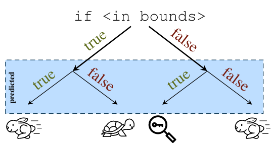
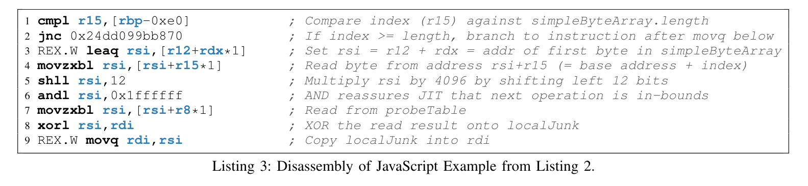

Spectre Attack
Table of Contents
1 背景介绍
1.1 乱序执行 (out-of-order execution)
现代CPU为了提高整体的利用效率，在执行指令时并不按照指令的顺序执行，而是并行甚至提前执行指令。
1.2 预测执行(speculative execution)
又或者叫投机执行，是乱序执行的一种。
因为内存读取的速度较慢，需要上百个时间周期，因此为了提高整体的速度，CPU会猜测一个可能的分支，然后执行该分支。当数据从内存读取完成后，再确定应该执行的分支。如果猜测的分支正确，那CPU保留已经执行的内容，因此能够大幅提高运行速度；如果猜测的分支错误，那么CPU会放弃已经执行的内容，恢复成原始状态，再执行分支内容。
当CPU分支预测错误时，会将寄存器等CPU组件恢复成初始状态，但微架构中的其他组件并没有恢复，如缓存，因此可能导致侧信道信息的泄漏。
现代CPU可能会提前执行上百条指令，具体数量由CPU recorder buffer大小决定。
1.3 缓存
由于内存的读取速度较慢，为了提高CPU的执行速度，现代CPU中还包括了更小但是更快的缓存。现代CPU一般共有L1, L2, L3三级缓存，速度由快到慢，大小由小到大。
缓存中的最小单位称为cache line,它的大小固定，一般是64或128字节。
当CPU读取数据时首先会查看L1 cache中是否存在数据，如果在则被成为缓存命中（cache hit），CPU直接读取；如果不在则被称为缓存丢失（cache miss），然后查看下一级cache，如果都未命中则查看内存。
数据是否在缓存会导致CPU读取时间的显著区别，微架构侧信道攻击就是利用这种信息差来进行攻击。
L1,L2缓存位于同一个核心中，不与其他核心共享，L3共享。
1.4 微架构侧信道攻击
由于数据是否在cache中会导致CPU读取速度的显著差异，这种差异可以被利用来泄漏信息。
目前存在很多攻击方法，文中主要使用了2种攻击方法，Flush+Reload和Evict+Reload。
1.5 ROP
非常常用的漏洞利用方法，搜索内存中的指令来构造gadgets,然后执行。在Spectre攻击中，gadgets的目的是泄漏数据。
2 Spectre攻击过程介绍
- 初始化阶段。攻击者训练CPU进行错误预测。
- 攻击者迫使受害者执行，如果攻击者和受害者在同一个进程中，如浏览器、JIT编译器、沙箱等，攻击者可以自己执行攻击代码。
- 受害者错误预测执行，执行错误的代码并将数据从侧信道中传递出来。
- 攻击者使用Flush+Reload等手段接收数据。
3 信息转化通道
在Spectre攻击中，受害者在执行错误代码时不但需要访问敏感数据，还需要将敏感数据通过侧信道的方式传递出来。
4 Spectre V1
变种1针对条件分支。 典型的代码如下，其中array2需要位于共享内存中。
if (x < array1_size)
y = array2[array1[x] * 4096];
预测执行情况：

考虑攻击者能够控制x，那么array1[x]指向一个字节的敏感数据k。
array1_size和array2未被缓存，但k被缓存。
由于之前获取的x都是<array1_size,因此预测为真。
由于array1_size未缓存，因此需要从内存中读，CPU预测执行分支为真的内容。
CPU访问array1[x]，得到字节k。
CPU再访问array2[k\*4096]，使得array2[k\*4096]加载到缓存中，读取速度变快。
攻击者通过访问array2 k‘=0,1,…,255，并测量不同k’下的访问速度，当k=k'时，访问速度明显增快，因此，攻击者可以获取k的值。
4.1 利用
4.1.1 JavaScript
攻击者可以在Web中构造如下代码来攻击Chrome。
if (index < simpleByteArray.length) {
index = simpleByteArray[index | 0];
index = (((index * 4096)|0) & (32*1024*1024 - 1)) | 0;
localJunk ^= probeTable[index|0]|0;
}
Chrome的V8引擎会将JavaScript代码JIT编译成机器码运行。 虽然clflush指令在JavaScript中不能使用，但可以使用Evict-Reload方法来进行攻击。

4.1.2 eBPF
eBPF是Linux内核的一个接口，基于Berkeley Packer Filter（BPF）扩展，常用来进行包过滤。
eBPF允许普通用户在内核状态下运行代码，内核会使用解释器或者JIT编译器来运行eBPF代码。
对eBPF的攻击类似JavaScript，但不同的是攻击者的接收端可以是用户空间中的二进制程序，并不需要运行在内核中。